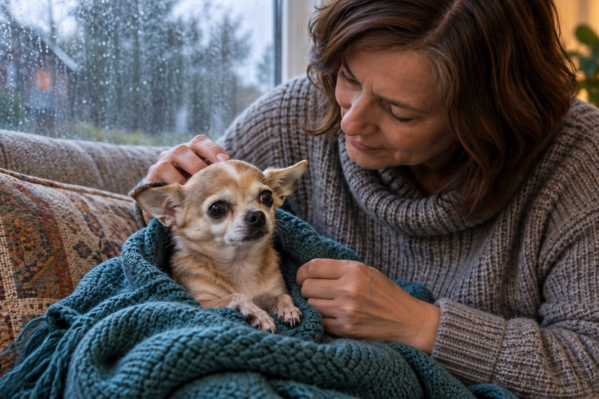

A brief shake after cold or excitement can be harmless; new, persistent, or severe trembling calls for veterinary advice.
Dogs shake for many reasons, and context matters. A wet dog shaking off water is different from a dog trembling at rest. Watch the whole dog: alertness, breathing, movement, appetite, and any recent exposure can help you decide the next step.
Look at the situation
Cold, fear, excitement, and physical exertion can all lead to trembling. Move your dog to a calm, comfortable place and see whether the shaking settles. Do not assume anxiety if your dog also looks painful, weak, or confused.
A dog who has been exposed to a possible toxin, eaten an unfamiliar substance, or has a high temperature needs prompt professional help. Keep packaging or details of the exposure for the veterinary team.
Describe the movement before trying to name it. Is the whole body trembling, one leg twitching, or the dog shivering after a cold or wet outing? Is the dog alert and able to walk normally? Note when the episode began, how long it lasted, whether it stopped with warmth or rest, and what happened just beforehand. A short video taken safely can be far more useful than a written label such as seizure or anxiety. Keep yourself safe around a distressed dog, and avoid putting fingers near the mouth during an episode.
Some shaking has an ordinary explanation, but persistent or unexplained tremors need a veterinary assessment. Do not rely on one cause because the dog was recently excited or frightened. Pain, illness, temperature, and exposure to a harmful substance can also affect movement. Look at the whole dog and the surrounding circumstances.
Other possible causes
Pain, nausea, illness, and neurological problems are among the possibilities. Tremors and seizures are not the same thing, but it can be hard to tell from a description alone. If safe, a short video of the episode can help a veterinarian assess what happened.
Do not try to diagnose the cause from one symptom. Your veterinarian can examine your dog and consider age, medical history, medications, and other signs.
Check for accompanying signs: vomiting, weakness, stumbling, abnormal breathing, pale gums, collapse, pain, or unusual behavior. If you suspect ingestion of a medication, sweetener, or other toxic product, contact a veterinarian or animal poison service immediately and keep the packaging. The FDA warns that xylitol exposure in dogs can cause shaking or seizures and requires urgent help. Do not wait to see whether the dog settles, and do not induce vomiting unless a professional instructs you to do so.
If the dog is wet and cold but otherwise alert, move it to a warm, dry place and observe carefully. If shaking continues, the dog seems unwell, or you cannot identify a harmless reason, call the clinic. A dog may shiver from pain without crying out. A calm appearance between episodes does not erase a concerning event.

What to do now
Keep your dog from stairs or hazards if balance is poor. Offer a quiet area and avoid forcing food, medication, or exercise. Note when the shaking began, how long it lasts, and whether your dog responds normally to you.
Call your veterinarian if the trembling is new, recurs, or does not settle promptly after an obvious mild trigger passes.
For a dog that is safe and stable while you arrange advice, reduce noise and keep it from stairs or slippery floors. Offer a quiet place to rest. Do not give human pain relief, sedatives, or another pet's medication. Those choices can be dangerous and may complicate veterinary treatment. If a movement episode recurs, record its duration and whether the dog responds to its name. Distinguish what you observed from what you assume happened.
When calling, state the dog's age, known conditions, medications, recent meals, possible exposures, and whether the movement is ongoing. Mention any recent fall, injury, or strenuous activity. If you have a video, ask how to share it securely. A clinic can advise whether to come in urgently, what to bring, and how to transport the dog. Do not delay that call while searching for a perfect explanation online.
Emergency signs
Seek urgent veterinary care if shaking comes with collapse, seizures, severe weakness, trouble breathing, pale gums, suspected poisoning, or significant pain. If your dog may have eaten a toxic product, contact a veterinarian or pet poison service immediately and follow their instructions.
An emergency is more likely when shaking is paired with collapse, repeated seizures, severe pain, trouble breathing, inability to stand, or suspected poisoning. These signs call for immediate veterinary direction. If a dog is having an episode that resembles a seizure, clear nearby hazards and time it. Do not restrain the dog or put anything in its mouth. Afterward, keep the environment quiet and follow the emergency team's instructions. Even if the dog appears to recover, the event may still require prompt evaluation.
Less dramatic shaking can also deserve care. A dog that trembles every time it rises, refuses food, or hides may be painful or ill. Do not let a normal temperature or one good walk falsely reassure you if the overall pattern is changing. You know your dog's baseline; report the difference.
Practical details
Observe more than the movement
A dog who shivers briefly after a wet walk and then warms up differs from a dog shaking under a blanket while refusing food. Look at breathing, balance, gum color, response to your voice, and whether the dog can stand. Note the time the episode began and whether it is continuous or comes in waves. If it is safe, a short video can help a veterinarian understand the movement.
Do not try to hold a shaking dog still or force the jaws open during a possible seizure. Clear nearby hazards and call an emergency clinic. If a potential toxin is involved, tell the clinic what product or food was available and approximately when exposure might have happened. Keep the package, but do not delay seeking help to find it.
Different patterns call for different responses
| Situation | Practical response |
|---|---|
| Brief shiver after cold exposure | Move to a warm comfortable place and observe whether the dog returns to normal. |
| Trembling during a known fear trigger | Reduce noise or pressure, but seek advice if episodes are intense or worsening. |
| New trembling at rest | Call a veterinarian, especially if appetite, walking, or alertness has changed. |
| Collapse, seizure, or toxin exposure | Contact an emergency veterinary service immediately and follow professional instructions. |
Possible causes are broad
Cold, excitement, and fear are familiar explanations, but pain, nausea, illness, medication effects, and neurologic problems can also cause shaking. A dog may have more than one issue at once. Shaking after a loud storm may reflect fear, yet the same dog could also be ill. Context helps prioritize questions; it does not replace an examination.
A veterinarian can consider age, medical history, recent medications, temperature, and other signs. Avoid giving a human pain reliever or sedative to see if the trembling improves. Some human products are dangerous to dogs, and masking a symptom can complicate assessment.
Consider three examples. A damp dog shivers briefly after a cold walk and returns to normal once dry and warm. Another dog trembles while trying to stand and seems reluctant to move. A third has rhythmic jerking after getting into a household product. The second and third situations demand veterinary advice, and suspected poisoning is urgent. The first can be observed only if the dog otherwise behaves normally and the shaking ends. Context matters, but warning signs override a reassuring story.
Try to capture a clear timeline rather than a diagnosis. Write down the first symptom, when it changed, what you did, and the response. If the dog has previous episodes, bring those dates too. Recurrence can alter the assessment even when each individual episode is short.
What to do while deciding
Move the dog to a safe, quiet place with comfortable temperature. Prevent falls if balance seems poor. Offer water if the dog is alert and able to drink normally, but do not force food or liquid. Call your veterinarian about new or recurring episodes even if the dog appears better later; a video and timeline may help decide whether further evaluation is needed.
Seek urgent care for trouble breathing, collapse, seizures, severe weakness, suspected poisoning, or marked pain. When a clinic is closed, contact an emergency hospital rather than waiting until morning for these signs. The safest next step depends on the entire picture, not on a single description of shaking.
Once the veterinarian has assessed the dog, ask what signs should trigger another visit and whether any home observations are helpful. Follow medication directions exactly if treatment is prescribed. If no cause is found immediately, maintain the episode log and share new videos. Some problems are intermittent and may not appear during a clinic visit. Consistent records give the team a better chance to recognize a pattern over time.
Avoid treating shaking as a personality trait just because a dog is small or nervous. A fearful dog can also become ill, and an otherwise confident dog can be frightened. If medical causes are ruled out and anxiety appears relevant, ask for a humane behavior plan. The safest approach is to assess the animal in front of you, not assume all tremors are the same.
A calm observation area can help you gather details while arranging care. Keep the dog away from stairs, note whether it can stand and respond, and look for vomiting or unusual breathing. If a seizure-like episode occurs, time it and clear nearby hazards without restraining the dog. A short video can help the veterinary team, but safety and a phone call come first. Keep suspected toxin containers or medication packets for the clinician. Do not throw them away because you are embarrassed about an accidental exposure; the ingredient and amount may affect urgent decisions.
If the dog recovers before the appointment, still report a concerning episode. Some signs are intermittent. Describe how long recovery took and whether the dog seemed confused or unsteady afterward. A veterinarian can advise whether examination or testing is needed. The crucial distinction is not whether the dog is shaking at the exact moment you call, but whether the event and accompanying signs suggest a risk that should not be left to guesswork.
Tell normal shivering from a concerning change
First consider the setting. A damp dog coming indoors from cold weather may shiver briefly and recover after being dried and warmed. A dog shaking during fireworks may show other signs of fear, such as pacing or seeking a hiding place. Observe whether the dog can walk normally, respond to you, breathe comfortably, and settle once the obvious trigger is removed.
Shaking that persists, begins without a clear trigger, or accompanies weakness, vomiting, pain, confusion, or collapse needs prompt veterinary advice. Do not give human pain medicine or try to guess the cause from a video online. If safe, record a short video showing the whole dog and the duration of the episode. Note whether the movement stops when you speak or touch the dog, and whether awareness changes.
For a dog with recurring episodes, keep a timeline of meals, activity, possible exposures, and medications. Store household chemicals and food hazards out of reach while you seek guidance. Even if an episode ends, a repeated or unusual pattern deserves assessment. The observation record helps a professional separate tremors, fear, discomfort, and other possibilities.
If the movement occurs again, note whether it follows sleep, exercise, a stressful event, or possible access to unfamiliar substances. Keep the dog in a safe, quiet area while you contact a professional. The timing and accompanying signs are more informative than the word shaking alone.
Continue exploring
For a broader routine, read Why Does My Dog Scratch Even When He Doesn't Have Fleas?, Why Is My Cat Drinking So Much Water?, and What Does Bad Breath in Dogs and Cats Mean?.
Frequently Asked Questions
Can dogs shake because they are cold?
Yes, but warming up should help. Persistent trembling needs a closer look.
Is shaking always a seizure?
No. Shivering, tremors, and seizures can look different, and a veterinarian can assess the episode.
Should I give my dog pain medicine?
Do not give human pain medicine unless a veterinarian specifically directs you to.
Editorial references
These resources informed the general guidance in this article. They do not replace advice tailored to your pet.
This guide offers general information. Your pet’s age, health, and history may call for a different plan. For medical concerns, ask your veterinarian.